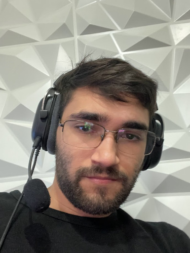

Olá! Me chamo Filipe. Desenvolvedor Fullstack.
Estou seguindo nessa jornada da programação com a meta de me especializar como desenvolvedor fullstack. Estou constantemente disposto a explorar novas áreas no campo da tecnologia, pois meu objetivo é solidificar minha posição neste universo vasto e em constante evolução.
Baixe meu CV
